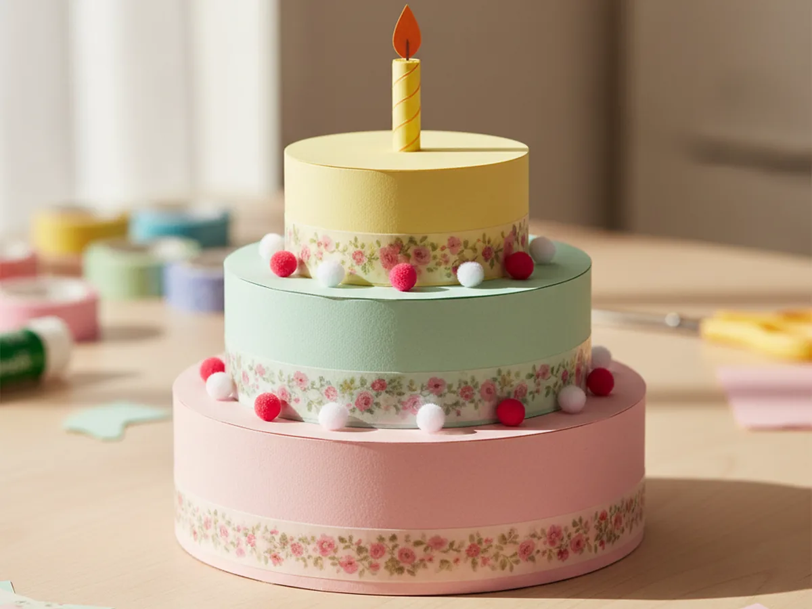
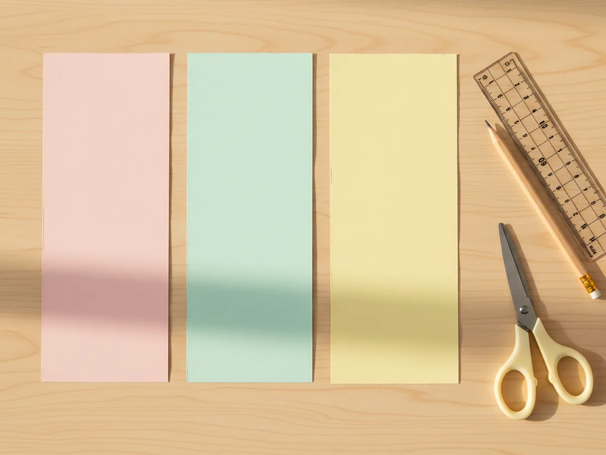
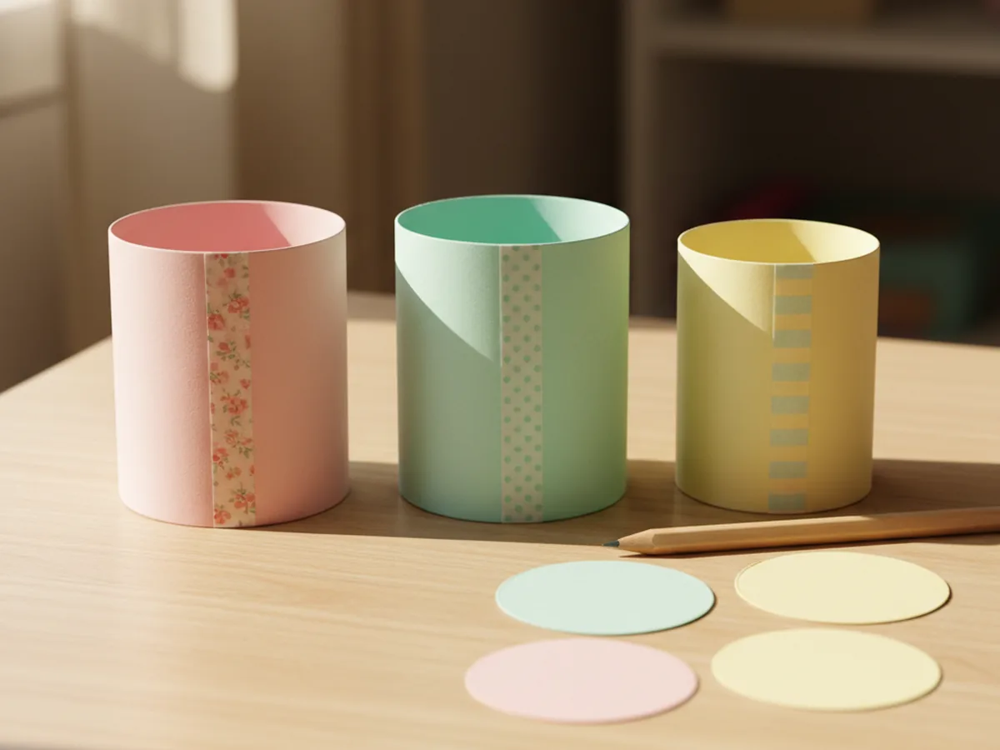
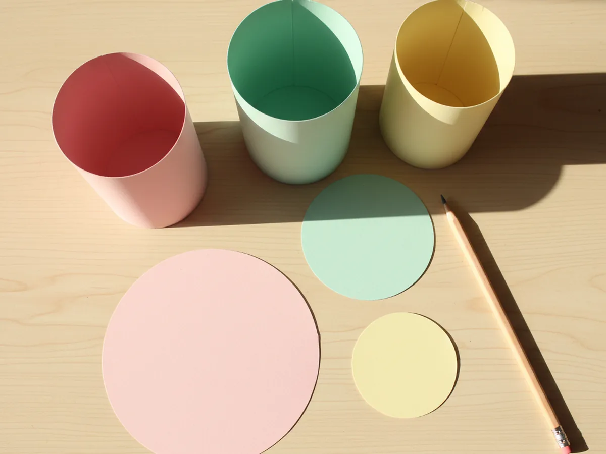
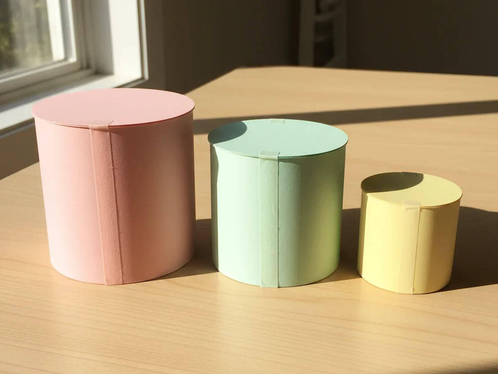
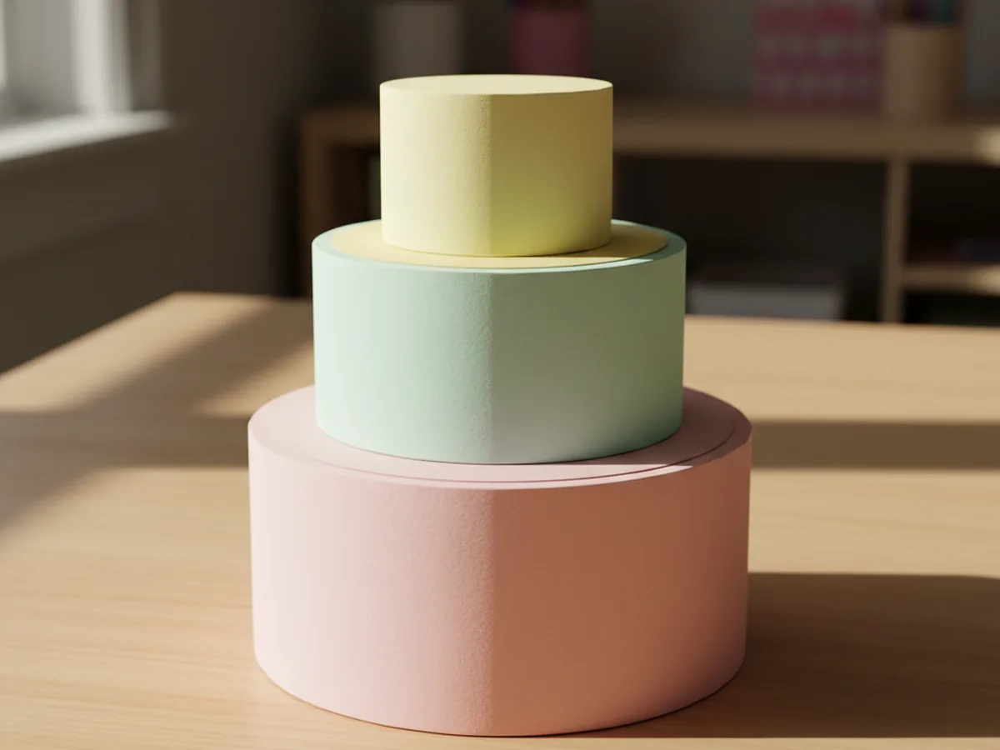
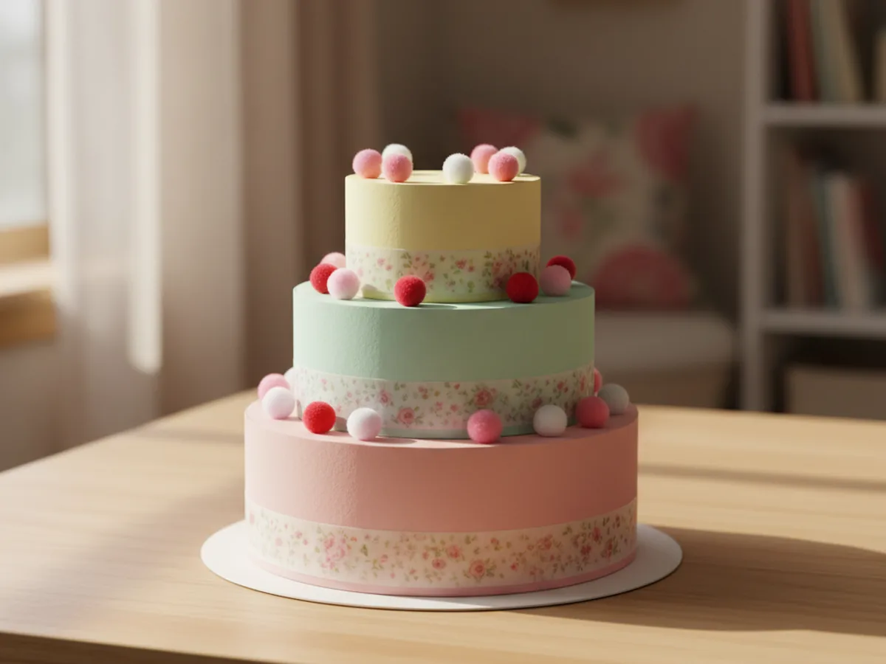
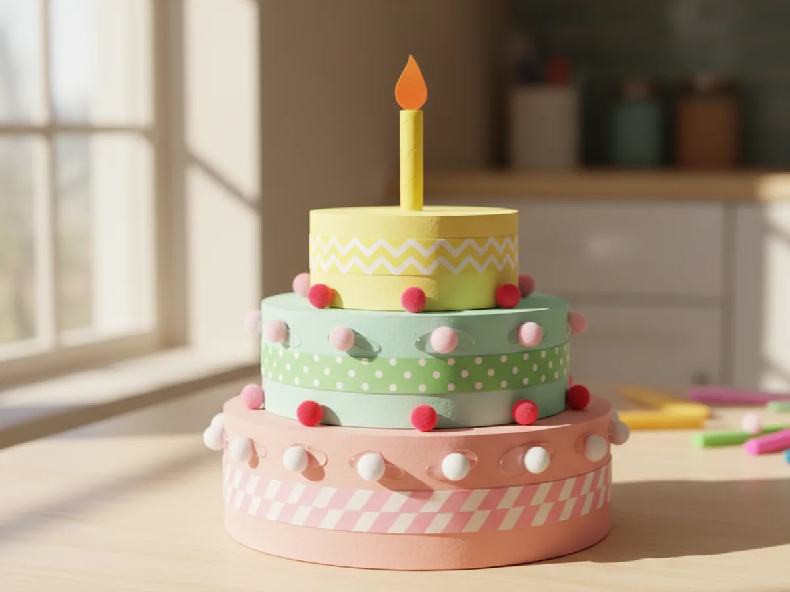

If your little one loves bakery shop pretend play, birthday parties, or anything tiny and sweet, this cake paper craft is going to feel like pure magic. With a few sheets of pastel cardstock and about 45 minutes at the kitchen table, you and your child can build a real three-tier paper birthday cake that stands up on its own, complete with a candle on top. 🎂
The best part is that this whole project uses simple cylinders, circles, and a little washi tape, so there is nothing tricky to measure and nothing breakable to worry about. Your finished paper cake craft will look so cute that your child will probably want to use it for every pretend tea party from now until forever, and it makes an adorable centerpiece for a real birthday breakfast too.
Why Kids Love This Craft
Few things light up a small child quite like the idea of making their own birthday cake. Cake is special. Cake means a celebration. Watching a flat sheet of paper turn into a real three-dimensional cake paper craft they can decorate, name, and "give" to a stuffed animal or sibling brings genuine joy.
This project also sneaks in plenty of useful skill-building. Rolling the cylinders strengthens little hands. Tracing and cutting circles supports fine motor control. Stacking the tiers and adding the decorations on top trains spatial reasoning and patience. Best of all, your child gets to make every creative call: which colors go where, how many pom pom cherries to add, whether to put on one candle or seven.
And then there is the pretend play that follows. A finished handmade paper birthday cake almost always becomes the star of a sweet little play scene for days after the craft is done. Tea parties, dollhouse bakeries, stuffed-animal birthdays, the kid kitchen, you name it. The fun outlasts the gluing by a long shot. 💛
What You'll Need
Here is everything you need to make this cake paper craft together at home. Lay your supplies out before you sit down with your child so the project flows easily without anyone hopping up mid-stack.
- Astrobrights Bright Cardstock Assortment (250 Sheets), sturdy 65 lb cardstock that holds its rolled shape without flopping.
- Crayola Construction Paper (240 Sheets, 12 Colors), great for the candle, flame, and any extra paper decorations on top.
- Elmer's All Purpose School Glue Sticks (30 Count), perfect for clean, low-mess gluing that little hands can manage.
- Fiskars 5 Inch Pointed-Tip Kids Scissors, safe blades that still give a clean cut on cardstock strips and circles.
- EnYan Vintage Washi Tape Set (10 Rolls), the secret weapon for the prettiest paper frosting bands and seams.
- Fun Express Tiny Pom Poms (500 Pieces), for the cutest little cherry, berry, and sprinkle decorations around the tiers.
- Crayola Broad Line Markers (10 Classic Colors), for drawing a name on the cake, dotting on sprinkles, or coloring the candle.
- A pencil, for tracing the cylinder openings to cut the tier tops.
Step-by-Step Instructions
This cake paper craft is genuinely beginner-friendly and forgiving, so go at your child's pace, let them help with every step, and have fun building each tier together. ✨
Step 1: Cut the Three Cake Tier Strips
Start by cutting three rectangle strips of cardstock that will become the sides of your tiered paper cake. Use a different pastel color for each tier so the cake looks like real layered frosting. For a sturdy size that fits perfectly on a craft table, cut one strip 12 inches wide, one 9 inches wide, and one 6 inches wide. Make each strip 3 inches tall. These three widths become the bottom, middle, and top tiers, in that order.
Line the three strips up side by side from largest to smallest before moving on, so the order stays clear while you and your little one work.

Step 2: Roll Each Strip Into a Tier Cylinder
Take the widest strip and curl it gently into a tube, bringing the two short ends together so they meet in a clean seam. Press the seam flat between your fingers and run a piece of washi tape straight down the joint from top to bottom to hold it closed. Repeat with the medium and small strips. You now have three sturdy cardstock cylinders in three sizes, the foundation of your cake paper craft.
This is one of those quiet moments where the project starts to feel real. The flat paper suddenly has a shape, and your child sees the cake taking form.

Step 3: Trace and Cut Three Frosting Top Circles
Stand each cylinder on a matching sheet of cardstock and trace around the top opening with a pencil. Add about a quarter inch outside the pencil line as you cut, so each finished circle is slightly larger than the cylinder. That little overhang is what makes the tops look like real drippy frosting plates. Cut all three circles, one for each tier of the 3D paper cake.
Smaller hands may need help drawing a smooth circle. Just hold the cylinder steady for them while they trace, then trim wobbles with a quick second snip.

Step 4: Glue the Frosting Tops on the Cylinders
Stand the largest cylinder upright and run a thin line of glue stick around the very top rim. Press the matching pink circle gently down on top so the overhang sticks out a little all the way around, like icing dripping over the edges. Repeat for the middle mint tier and the small yellow tier. Each paper cake tier now has a flat frosted top, ready to be stacked.

Step 5: Stack and Glue the Three Tiers
Now for the most exciting moment. Set the biggest pink tier on the table as the base. Place the middle mint tier in the very center of its top circle, then place the smallest yellow tier in the center of the mint one. Once the alignment looks good, lift each upper tier one at a time, add a generous swirl of glue to the underside, and press it back into place. Hold each tier for a slow count of fifteen so the glue grips. Your tiered cake paper craft is officially standing tall.
Walk around the cake with your child and look at it from every angle. This is the moment that almost always gets a happy little gasp.

Step 6: Add the Washi Tape Frosting and Pom Pom Cherries
Time to decorate. Choose two or three pretty rolls of washi tape and wrap one strip around the bottom of each tier, right where the cylinder meets the frosting plate below. This instantly looks like a fancy ribbon of icing. Then dab little dots of glue around the top edge of each tier and press tiny pom poms into the glue so they sit like cheerful cherries or sprinkles. Mix the colors however your child wants, the messier the better. Your cute paper cake is now bakery-worthy.

Step 7: Add a Paper Candle on Top
Cut a small rectangle of yellow paper, about an inch tall and two inches wide, and roll it tightly into a slim candle. Tape the seam closed. Cut a small teardrop shape from orange paper and glue it to the top of the candle as the flame. Add a dab of glue to the bottom of the candle and stand it in the very center of the top tier. The simple, joyful art of paper craft takes a whole new shape when your child blows out their handmade candle. 🎀
Sing happy birthday together. Let your child pretend to slice a piece for their stuffed bear. This cake paper craft is officially finished, and the play is just getting started. 🌷

Variations to Try
Wedding Cake Version: Skip the candle and use all white cardstock for the tiers, then decorate with delicate floral washi tape and small white pom poms. Top with a tiny paper flower bouquet for an elegant pretend wedding cake.
Number Birthday Cake: Cut a large paper number for the age your child is celebrating, like a big "5" or "6", and glue it to the front of the bottom tier. This turns the craft into a sweet keepsake for a real birthday morning or a Polaroid prop.
Tiny Cupcake Version: For younger toddlers, skip the three tiers and just make one short cylinder with a circle top. Decorate it with a single washi tape band and one big pom pom on top for a quick paper cupcake project that takes ten minutes flat.
Final Thoughts
This cake paper craft is exactly the kind of project that feels like it should be harder than it is. The finished cake looks impressive, it stands up on its own, and it sparks days of pretend play afterward, but the steps themselves are so simple a preschooler can manage most of them with a little gentle help.
If your little one loved building this paper birthday cake, save this tutorial on Pinterest so you can come back to it for the next stuffed-animal party. Happy crafting, friend.
More Crafts You'll Love
If your child enjoyed making this paper cake, they will love these other sweet paper projects next: